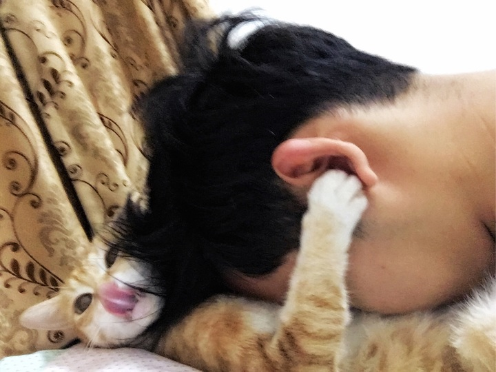

本館提供最優質吸貓服務
吸貓是什麼?
吸貓就是吸貓，如同字面上的意思，用你的鼻子或嘴巴不停的、大口的、不間斷的吸貓咪。 你可以吸貓背、貓肚(最好吸)、貓肉球、貓尾巴、貓屁屁、貓頭、貓臉、貓耳或任何理想吸的地方。 你可以坐著吸、躺著吸、趴著吸、站著吸、邊走邊吸。 還可以優雅的吸、粗魯的吸、飢渴的吸、溫柔的吸、被動的吸。 現在就開始吸貓吧!! (請不要流口水在貓咪身上，這樣很噁心)
為什麼要吸貓?
總經理
我們為什麼要吸貓?為什麼我們喜歡吸貓? 本會館的總經理很榮幸為各位說明這個問題! 汪!汪!! 旺嗚 汪嚕嗚嗚， 汪汪旺旺 凹嗚嗚 汪嗚， 凹嗚 汪 嗚汪汪嗚嗚嚕旺， 汪汪嗚嗚 "喵嗚" 汪汪嗚嗚 汪嗚 凹嗚凹~嗚~旺! 嗚嗚嗚 旺~旺， 旺旺汪旺， 嗚凹汪 汪汪汪旺 嗚嚕 凹旺旺。 嗚嗚~旺旺 凹嗚嚕 旺凹旺凹嗚嗚嚕~ 旺!